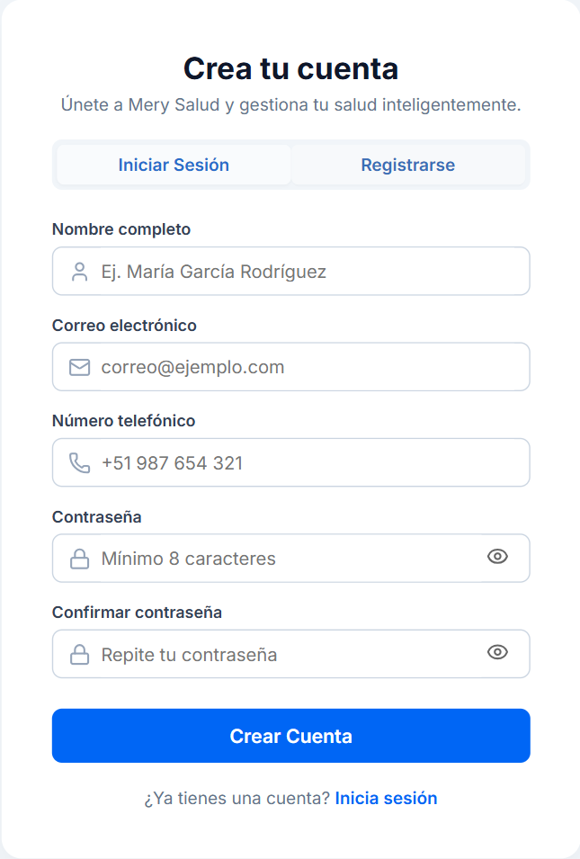
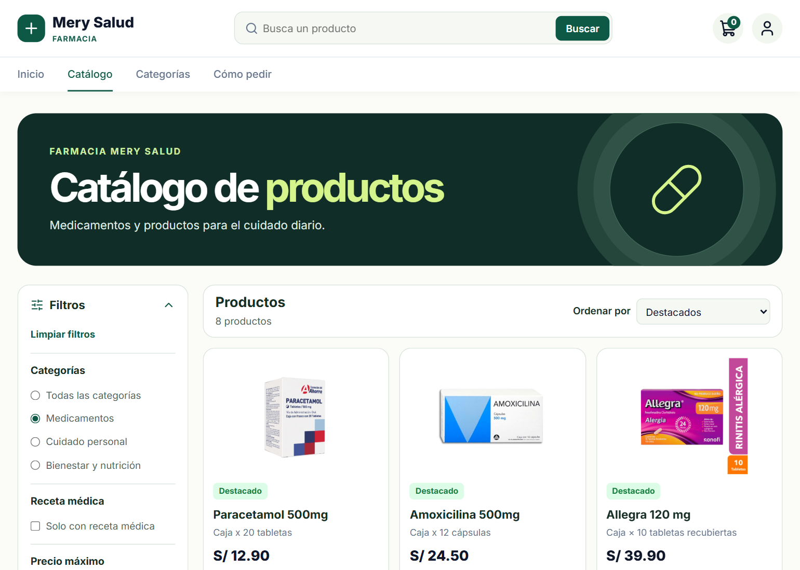
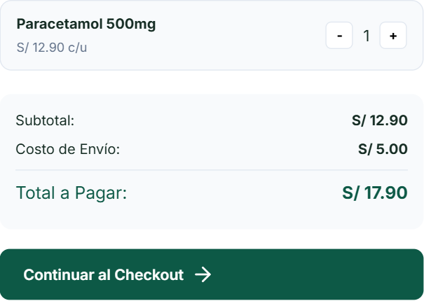
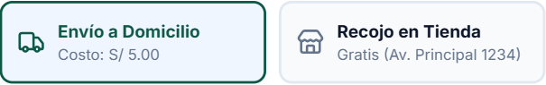
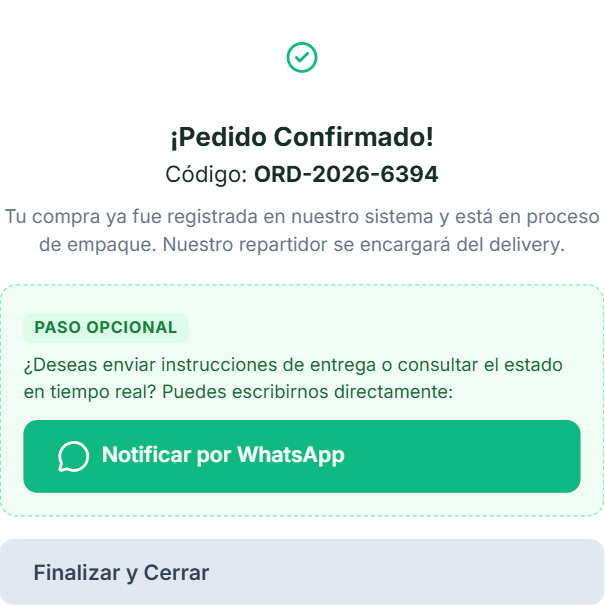
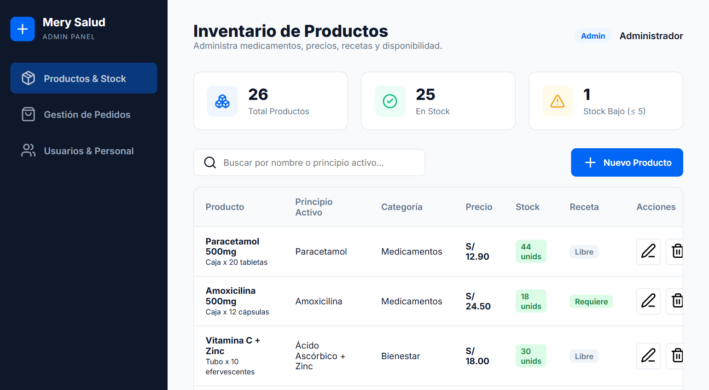
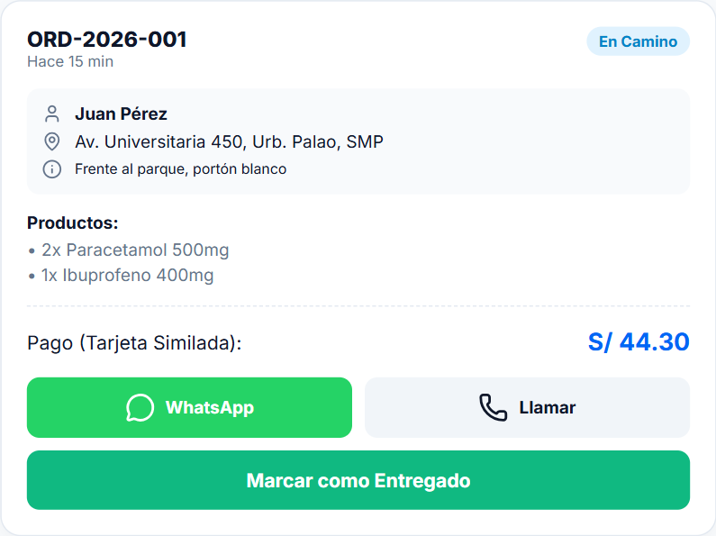

Centro de ayuda
Manual de Mery Salud
Aprende a hacer un pedido o a usar el panel de tu rol. Abre cada paso para ver las instrucciones y las capturas.
Guía para clientes
Haz tu primer pedido
Crear una cuenta es opcional. Puedes hacer un pedido como invitado. En el formulario del pedido tendrás que indicar tus datos de contacto.
+Crear una cuenta o iniciar sesiónPaso opcional
- Desde Inicio o Catálogo, pulsa el icono de usuario y elige Registrarse.
- Completa nombre y correo. El teléfono es opcional. Crea una contraseña de al menos ocho caracteres y repítela en Confirmar contraseña.
- Pulsa Crear Cuenta. La web vuelve a Inicio con la sesión iniciada.
- Si ya tienes una cuenta, elige Iniciar Sesión y usa tu correo y contraseña. Puedes cerrar sesión desde el menú de perfil.

1Encontrar los productosCatálogo, búsqueda y filtros
- Pulsa Explorar catálogo en Inicio o busca por nombre o principio activo.
- Abre Filtros para elegir una categoría, un precio máximo o productos con receta. Usa Limpiar filtros para volver a la lista completa.
- Revisa el nombre, la presentación y el precio antes de pulsar Agregar al carrito.

2Revisar el carritoCantidades, subtotal y continuación
- Agrega los artículos que necesitas. Si estás en el Catálogo, vuelve a Inicio en el mismo navegador para completar el pedido.
- Abre el carrito. Usa + y − para ajustar las cantidades. Al llegar a cero, el artículo se quita.
- Revisa el subtotal y pulsa Continuar al Checkout desde Inicio.

3Elegir la entrega y completar los datosEnvío a domicilio o recojo en tienda
- Elige Envío a Domicilio (S/ 5.00 en esta versión) o Recojo en Tienda (gratis).
- Ingresa tu nombre completo, celular de nueve dígitos que empiece con 9 y correo electrónico. Para domicilio, escribe la dirección completa.
- El formulario de prueba permite seleccionar una foto o PDF de la receta, pero el archivo no se guarda con el pedido. Coordina con la farmacia cómo presentarla si corresponde.

4Simular el pago y guardar el códigoConfirmación del pedido
- En Pago Simulado con Tarjeta, usa datos ficticios: 16 dígitos, vencimiento en formato MM/AA y CVV de tres dígitos.
- Pulsa Pagar y Confirmar. Corrige los campos señalados si aparece un aviso.
- Guarda el código mostrado. Notificar por WhatsApp abre un mensaje para que lo revises antes de enviarlo. Pulsa Finalizar y Cerrar para regresar a la tienda.
Verifica la recepción. La pantalla de confirmación puede aparecer aunque el pedido no se haya guardado. Confirma la recepción con la farmacia antes de esperar un despacho.

Guía para trabajadores
Panel de administración
Usa la cuenta de administrador que te asignó el equipo. Al iniciar sesión, la web abre el panel de administración.
1Consultar y registrar productosProductos y stock
- En Productos & Stock, busca por nombre o principio activo y revisa el precio, las unidades y la condición de receta.
- Pulsa Nuevo Producto o el lápiz de una fila. Completa nombre, principio activo si corresponde, categoría, presentación, precio y stock. Marca la opción de receta si aplica y pulsa Guardar Producto.
- La papelera retira el producto de la vista actual. Al recargar, el registro vuelve a aparecer.

2Registrar cuentas de personalUsuarios y roles
En Usuarios & Personal, busca por nombre o correo. Para crear una cuenta, pulsa Registrar Usuario, completa los datos, selecciona el rol autorizado y define una contraseña inicial. Pulsa Guardar Usuario.
3Consultar pedidos de demostraciónGestión de pedidos
Gestión de Pedidos muestra un ejemplo estático. Los pedidos que se envían desde la tienda no se muestran en esa tabla.
Para cerrar la sesión, pulsa Volver a la Tienda y usa Cerrar Sesión en el menú de perfil.
Guía para trabajadores
Panel de reparto
Inicia sesión con tu cuenta de repartidor. El panel usa pedidos de demostración y reinicia sus estados al recargar la página.
1Revisar las entregas de prácticaTodos, En Ruta y Entregados
Usa las pestañas para filtrar. En cada ficha, revisa el código, los productos, el total y la dirección con su referencia.

2Cambiar el estado de un pedidoDe Por Recoger a Entregado
En un pedido Por Recoger, pulsa Iniciar Ruta de Entrega. Cuando aparezca como En Camino, pulsa Marcar como Entregado y comprueba el resultado en la pestaña Entregados.
3Identificar las opciones de contactoWhatsApp, llamadas y cierre de sesión
WhatsApp prepara un mensaje y Llamar abre el marcador. Usa estos controles solo con contactos de prueba autorizados. El icono Salir vuelve a Inicio, donde puedes cerrar la sesión desde el perfil.
Preguntas frecuentes
¿Tengo que crear una cuenta para pedir?
Puedes hacer el pedido como invitado. El formulario te pedirá nombre, celular y correo para el pedido.
¿Por qué el botón de pago del catálogo no confirma?
Los productos se conservan en el carrito del mismo navegador. Vuelve a Inicio y completa el pedido desde su carrito.
¿Qué hago si el catálogo está vacío?
Comprueba el texto buscado y pulsa Limpiar filtros. Si aparece un error de conexión, recarga la página o avisa a quien administra la instalación.